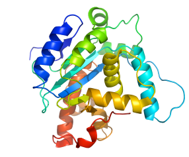
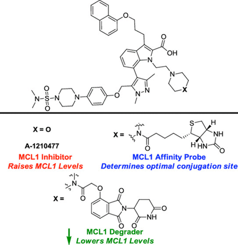
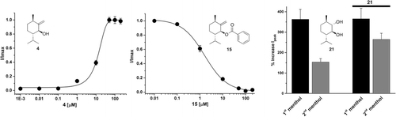
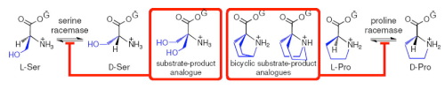
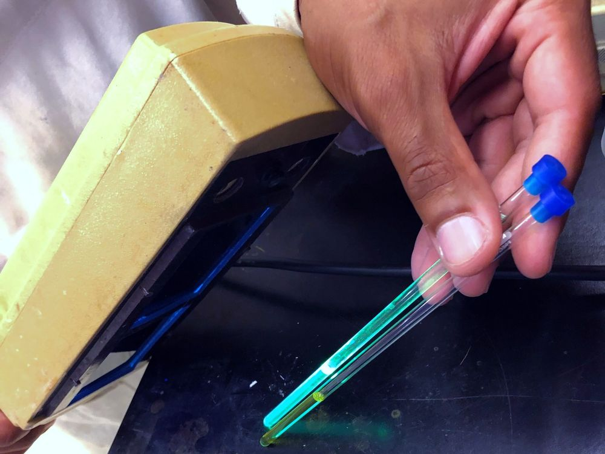
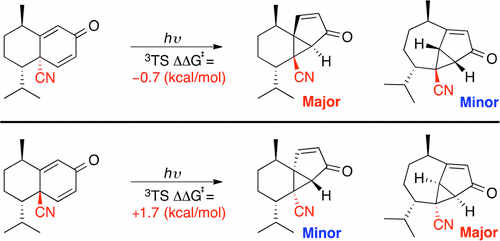
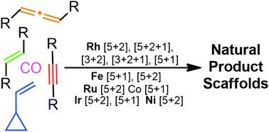
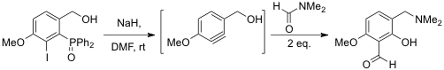

Research
We aim to make biologically useful molecules using modern synthetic methods.
Protein degraders, inhibitors and modulators
In the Derksen lab, we aim to make biologically useful molecules using modern synthetic methods. We have a particular focus on targeting proteins involved in cancer and pain.

Representative publications
-
19
From Inhibition to Degradation: Targeting the Anti-Apoptotic Protein Myeloid Cell Leukemia 1 (MCL1)
J. Med. Chem. 2019, 62, 5522–5540. doi:10.1021/acs.jmedchem.9b00455
Highlighted in Cancer Discovery (News in Depth): “Targeting MCL1, Companies Aim to Unblock Apoptosis” by Elie Dolgin, PhD. doi:10.1158/2159-8290.CD-ND2019-002

-
16
A General Strategy for the Preparation of Thalidomide-Conjugate Linkers
Synlett 2017, 28, 2881–2885. doi:10.1055/s-0036-1588539
Invited manuscript for a special issue dedicated to Professor Victor Snieckus.
-
13
Natural-Product-Derived Transient Receptor Potential Melastatin 8 (TRPM8) Channel Modulators
Org. Lett. 2016, 18, 2746–2749. doi:10.1021/acs.orglett.6b01222

-
10
Inhibition of Serine and Proline Racemases by Substrate-Product Analogues
Bioorg. Med. Chem. Lett. 2014, 24, 390–393. doi:10.1016/j.bmcl.2013.10.061

-
30
Pannexin-1 Channel Inhibition Alleviates Opioid Withdrawal in Rodents by Modulating Locus Coeruleus to Spinal Cord Circuitry
Nat. Commun. 2024, 15, 6264. doi:10.1038/s41467-024-50657-7
Strain-induced reactivity
New methodology development in the Derksen group is based around the use of geometrically strained compounds to induce novel reactivity in a stereo- and regiochemically controlled manner. This work involves the use of light and metal catalysis to promote reactions.

Representative publications
-
15
Divergent Photocyclization/1,4-Sigmatropic Rearrangements for the Synthesis of Sesquiterpenoid Derivatives
Org. Lett. 2017, 19, 484–487. doi:10.1021/acs.orglett.6b03635

-
18
Beyond Geminal Diesters: Increasing the Scope of Metal-Mediated Vinylcyclopropane Annulations While Decreasing Pre-activation
Org. Biomol. Chem. 2018, 16, 3506–3523. doi:10.1039/C8OB00593A

-
12
Generation of Benzyne Species from Diphenylphosphoryl Derivatives: Simultaneous Exchange of Three Functional Groups
Chem. Eur. J. 2016, 22, 8479–8482. doi:10.1002/chem.201601370
